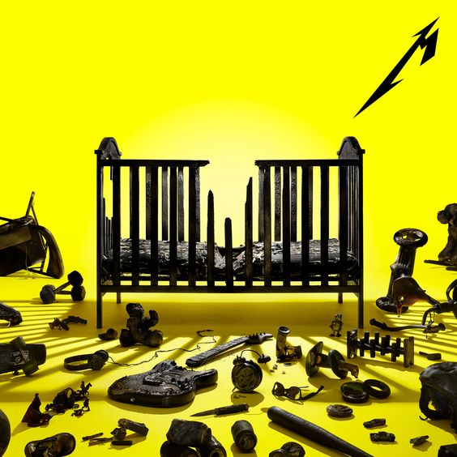

72 Seasons
2023
A 72 Seasons a Metallica tizenegyedik stúdióalbuma, amely 2023 áprilisában jelent meg a Blackened Recordings kiadónál. A producerek Greg Fidelman, James Hetfield és Lars Ulrich voltak. A cím az emberi élet első 18 évére utal, és Hetfield személyes élményeit dolgozza fel.
Zeneileg a lemez a klasszikus thrash metal elemeket ötvözi modern hangzással. Olyan számok szerepelnek rajta, mint a „Lux Æterna”, a „Screaming Suicide” és a „72 Seasons”. A dalok hosszúak, erőteljesek és riffközpontúak.
A fogadtatás vegyes volt: egyesek dicsérték az energiát és Hetfield teljesítményét, míg mások a hosszú játékidőt kritizálták. Ennek ellenére az album világszerte sikeres lett, és bizonyítja, hogy a Metallica még mindig meghatározó zenekar.
| Szám | Hossz | Írók |
|---|---|---|
| 72 Seasons | 7:39 | Hetfield, Ulrich, Hammett |
| Shadows Follow | 6:12 | Hetfield, Ulrich |
| Screaming Suicide | 5:30 | Hetfield, Ulrich, Trujillo |
| Sleepwalk My Life Away | 6:56 | Hetfield, Ulrich, Trujillo |
| You Must Burn! | 7:03 | Hetfield, Ulrich, Trujillo |
| Lux Æterna | 3:22 | Hetfield, Ulrich |
| Crown of Barbed Wire | 5:49 | Hetfield, Ulrich, Hammett |
| Chasing Light | 6:45 | Hetfield, Ulrich, Hammett |
| If Darkness Had a Son | 6:36 | Hetfield, Ulrich, Hammett |
| Too Far Gone? | 4:34 | Hetfield, Ulrich |
| Room of Mirrors | 5:34 | Hetfield, Ulrich |
| Inamorata | 11:10 | Hetfield, Ulrich |